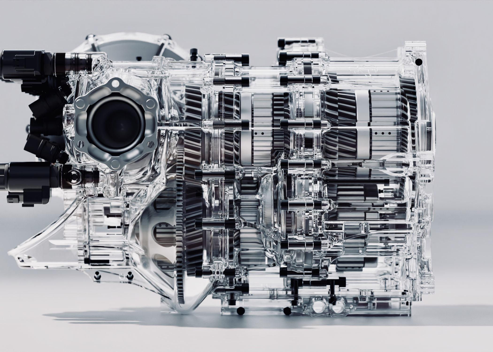

Jesko
absolut
Becoming the fastest
Just as powerful as its track-focused sibling, the Jesko Absolut is the more seamless and stealthy of the two. Every surface element is constructed to reduce drag or surrounding turbulence while increasing high-speed stability.
With a drag coefficient value of only 0.278 Cd in combination with a frontal area of 1.88 m² and a minimum power output of 1600 bhp, the Jesko Absolut is destined to achieve higher, more extraordinary speeds than any Koenigsegg or any other fully homologated car before it. How fast? Time will tell. Looking at the math and our advanced simulations – it will be unbelievably fast.
Streamlined
For top speed
Extreme Performance
Need for
Top Speed


-
01
Lightest V8 crankshaftThe Jesko Absolut will be powered by a 1280 bhp (1600 bhp on E85), twin turbo charged V8 engine, featuring the world’s lightest V8 crankshaft that weighs just 12.5 kg. This flat-plane 180-degree crankshaft produces more power with greater efficiency while achieving a high 8500 rpm rev limit. Its design allows even firing across engine banks, creating a visceral engine sound. Koenigsegg has also designed super-light connecting rods and pistons to counter the tendency of greater vibrations in flat-plane engines.
-
02
Superior CFDThe Jesko Absolut will be powered by a 1280 bhp (1600 bhp on E85), twin turbo charged V8 engine, featuring the world’s lightest V8 crankshaft that weighs just 12.5 kg. This flat-plane 180-degree crankshaft produces more power with greater efficiency while achieving a high 8500 rpm rev limit. Its design allows even firing across engine banks, creating a visceral engine sound. Koenigsegg has also designed super-light connecting rods and pistons to counter the tendency of greater vibrations in flat-plane engines.
-
03
Pressure CoefficientThe Jesko Absolut will be powered by a 1280 bhp (1600 bhp on E85), twin turbo charged V8 engine, featuring the world’s lightest V8 crankshaft that weighs just 12.5 kg. This flat-plane 180-degree crankshaft produces more power with greater efficiency while achieving a high 8500 rpm rev limit. Its design allows even firing across engine banks, creating a visceral engine sound. Koenigsegg has also designed super-light connecting rods and pistons to counter the tendency of greater vibrations in flat-plane engines.
Jesko about Specifications
-
1600
HP
Output (on E85)
-
0.278
CD
Drag Coefficient
-
9
Speed
Light Speed Transmission
-
8.6:1
.
Compression
-
5.0
Liter
Koenigsegg Twin-turbo V8
Record Smashing
The Jesko Absolut is specifically designed for incredible speed. It boasts an aggressively sleek silhouette paired with insane powertrain engineering aimed at just one thing: groundbreaking top speed. The Jesko Absolut is unlike anything ever seen in an homologated, series production car


13
13
Light Speed Transmission
-
In-House Tech
100% designed and build by Koenigsegg
-
Seamless Driving Experience
Simultaneous opening & closing of clutches
-
Lightning Fast Response
Near-instantaneous gear chances between any gear
-
Compact
Just 90kg
The Light Speed Transmission (LST) is Koenigsegg's latest gearbox innovation comprising nine forward gears and several wet, multi-disc clutches in a compact ultra-light packagae. It is capable of gear changes between any gear at near light speed, making thge driving experience smooth and seamless.
The V8 Innovations
-
Redesigned
V8 feul injection system
-
Added Aeration
For a cooler cylinder and cleaner combustion
-
Less Strain
A top of power range
-
Beyond Improvements
Operate at maximum efficiency, flexibility and control
Added aeteration means a cooler cylinder, cleaner combustion, and less strain on the engine at the top of its range. The V8's are also fitted with the world's first individual in-cylinder pressure sensor system for production cars, allowing the Engine Management System to operate each cylinder at maximum efficiency.
Next Level Power
-
Increased Rev Limit
To 8500 rpm
-
Low Inertia
V8 feul injection system
-
Amazing Response
Facilitating faster shifting
-
Super Downsized V8
Comptetitive weight and compact design
This mix of changes and technological improvements raises the engine's rev limit to 8500 rpm - and inreases the power to 1600 bhp on E85 fuel. When running on regular gasoline, the engine produces 1280 bhp. The Jesko Absolut features Koenigsegg's most powerful engine, which is also the world's fastest revving engine.